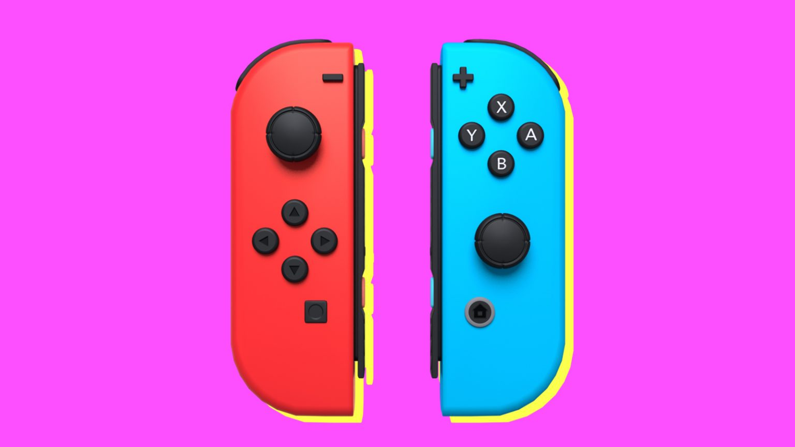

Nintendo Switch

The Nintendo Switch was designed to be seperated in halves. That way you can play with somebody else! These controllers are also known as Joycon controllers and was made in 2017 which is one of the most recent controllers. Are you asking if you can put them back together again? Well guess what... You can!